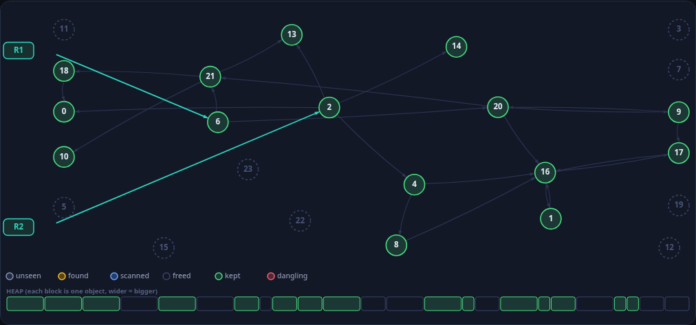
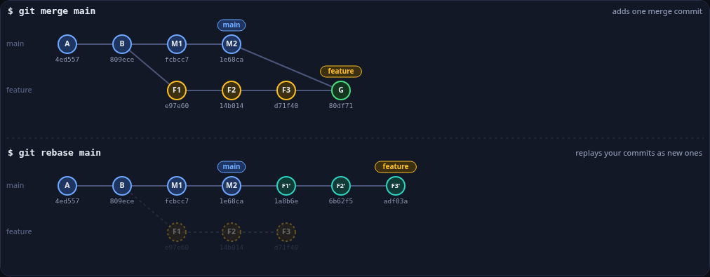
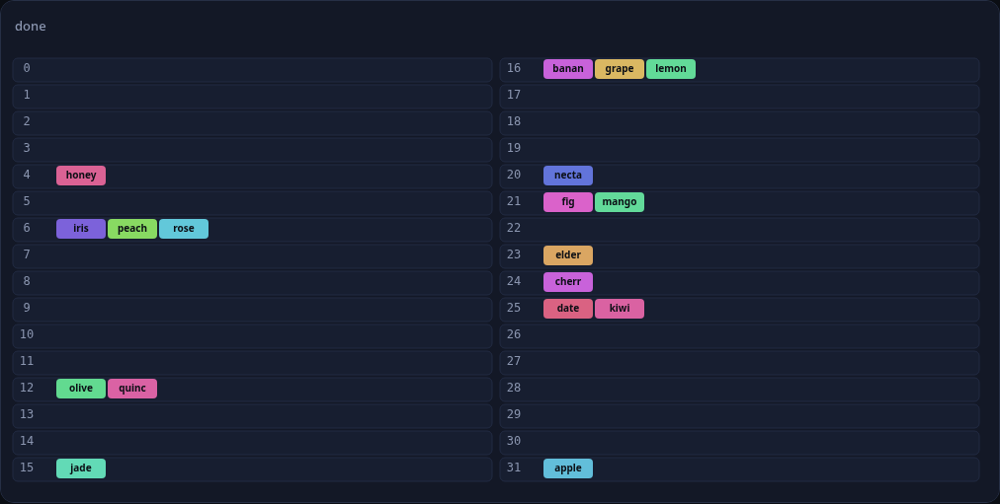
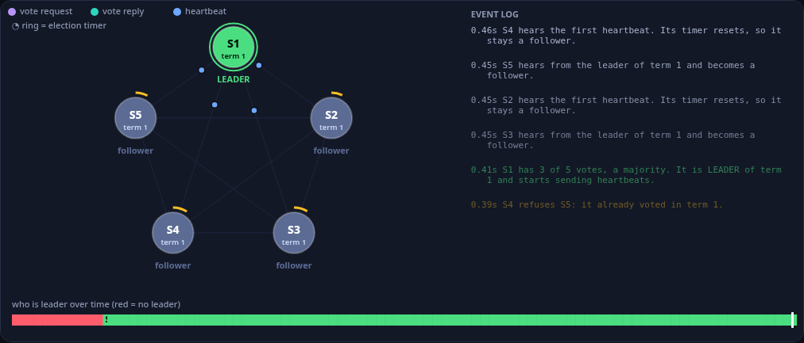
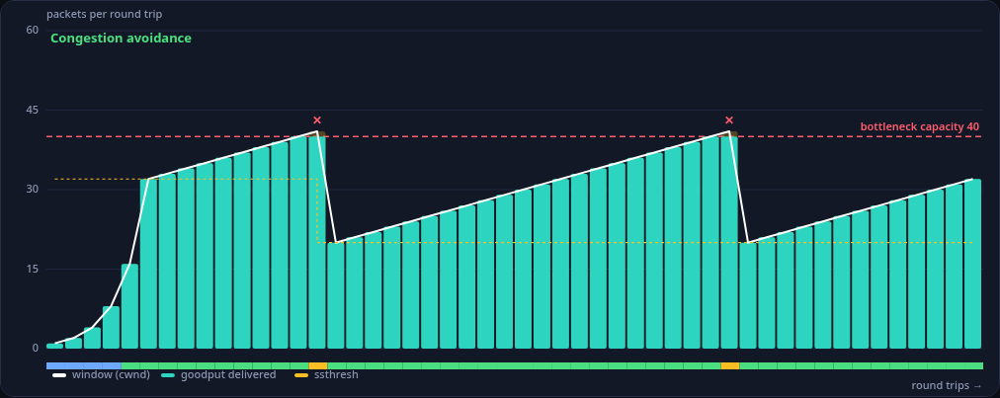
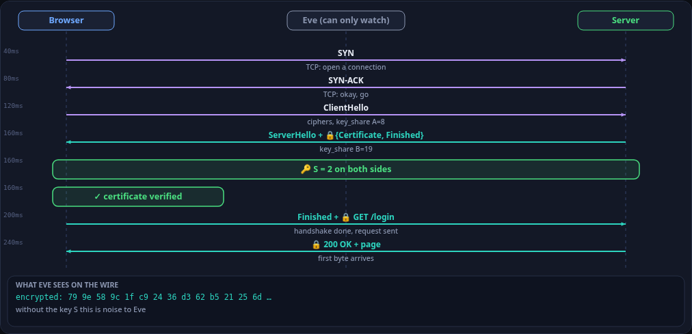

tinkertoy
Ask your coding agent how something works and get a toy you can play with, not a wall of text: one HTML file with sliders, a scrub bar and a Break it button.
npx @barood-labs/tinkertoy init
GitHub

How garbage collection (mark and sweep) worksStart from the things your program can reach, mark everything they touch, then sweep away whatever was never marked. Each step is one object.
Git merge vs rebaseSame starting point, two ways to bring main's work into your branch. Watch what happens to the history, the commit hashes, and the conflicts.
How a hash table growsKeys land in buckets by hash. When the table gets crowded it doubles and re-hashes everything, which is what keeps lookups fast.
How a Raft leader election worksEvery node starts as a follower with a random timer. The first timer to expire asks for votes; whoever collects a majority becomes leader and keeps everyone calm with heartbeats.
How TCP congestion control worksA sender can't see the network, so it probes: double fast, then creep up, and halve the moment packets get dropped. Each step here is one round trip.
How an HTTPS (TLS) handshake worksTwo strangers agree on a secret key in public, the server proves who it is with a certificate, and then everything is encrypted. Tiny numbers here, same idea as the real thing.How it works
- Install the skill into your project (Claude Code, Codex, Cursor).
- Ask "how does a hash table resize?" The agent writes one self-contained
.htmlfile. - Open it. Drag the sliders, scrub the timeline, press Break it. It works offline.